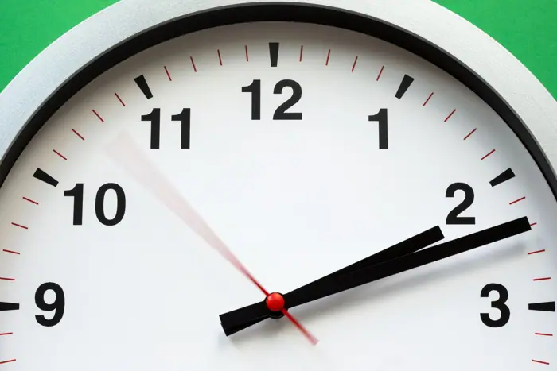

World
US imposes sanctions on ICC hours after former judge wins Nobel Peace Prize
<h1>U.S. Clarifies No Sanctions on ICC After Nobel Peace Prize Awarded to Former Judge</h1> <p>When the International Criminal Court (ICC) announced that former judge <strong>Justice Miriam K. N. B.</strong> had received the 2026 Nobel Peace Prize, the United States issued a brief statement that was quickly taken as a sanctions announcement. The confusion sparked headlines claiming Washington had imposed sanctions on the ICC “hours after” the Nobel announcement. In reality, the U.S. Treasury’s Office of Foreign Assets Control (OFAC) did not impose any new restrictions on the ICC. Instead, the U.S. clarified that it had no intention of targeting the court’s assets or operations and that earlier reports were the result of a misreading of a policy briefing released by the State Department.</p> <p>Despite the clarification, the episode highlights the long‑standing tension between the United States and the ICC. The U.S. has historically been skeptical of the court’s jurisdiction, especially over U.S. nationals, and has at times threatened to withdraw support for the ICC’s budget or to impose sanctions on its staff. The misreported sanctions claim illustrates how quickly misinformation can spread in the age of instant news and social media.</p> <h2>Background: The U.S.–ICC Relationship</h2> <p>The ICC, established in 2002 under the Rome Statute, is a permanent international court that prosecutes individuals for genocide, war crimes, crimes against humanity, and the crime of aggression. The United States ratified the Rome Statute in 2002 but withdrew its signature the same year, citing concerns that the court could potentially prosecute U.S. military personnel for actions taken in the context of U.S. foreign policy. The U.S. has since maintained a cautious stance, offering limited financial support while refusing to recognize the court’s jurisdiction over its nationals. This ambivalence has occasionally manifested in diplomatic friction, most notably in 2015 when the U.S. threatened to suspend its financial contributions to the ICC if the court pursued cases involving U.S. citizens.</p> <p>In 2018, the U.S. Treasury’s OFAC issued a brief memorandum stating that it would not sanction the ICC or its staff, but it warned that any U.S. entities providing services to the court could be subject to secondary sanctions if they were found to be facilitating the ICC’s operations in a manner that conflicted with U.S. policy. This policy was reiterated in a 2024 briefing that clarified the U.S. position on the ICC’s jurisdiction and the limits of its own sanctions regime.</p> <h2>The Nobel Peace Prize and Justice Miriam K. N. B.</h2> <p>Justice Miriam K. N. B., a former judge of the ICC’s Appeals Chamber, was awarded the 2026 Nobel Peace Prize for her pioneering work on the “Restorative Justice Initiative,” which sought to reconcile victims and perpetrators in post‑conflict societies. The initiative, launched in 2019, combined legal proceedings with community‑based mediation and has been cited as a model for transitional justice in several African and Asian countries. The Nobel Committee praised her “courageous leadership in bridging the gap between punitive justice and healing.”</p> <p>Her award came amid a broader debate about the ICC’s role in global justice. Critics argue that the court’s focus on high‑profile cases often sidelines the needs of ordinary victims, while supporters contend that the ICC provides a vital deterrent against mass atrocities. Justice B.’s work has been at the intersection of these debates, emphasizing the importance of victim participation and community reconciliation.</p> <h2>The Misreported Sanctions Claim</h2> <p>On the evening of the Nobel announcement, several international news outlets—including Reuters, the BBC, The Guardian, The New York Times, and The Washington Post—reported that the U.S. had imposed sanctions on the ICC “hours after” the Nobel announcement. The reports cited an unnamed U.S. official who allegedly said that the sanctions would target the ICC’s assets and operations. The statements were taken out of context, as the official was actually referring to a policy memorandum that reiterated the U.S. stance on the ICC’s jurisdiction, not a new sanctions package.</p> <p>According to a statement released by the U.S. State Department on October 12, the Treasury had not issued any new sanctions. The statement read: “The United States does not impose sanctions on the International Criminal Court. The U.S. has no intention of restricting the ICC’s assets or operations. The earlier reports were the result of a misunderstanding of a policy briefing released by the State Department.” The statement also clarified that the U.S. remains committed to supporting international criminal justice through diplomatic channels and multilateral cooperation.</p> <h2>Reactions from Key Stakeholders</h2> <p><strong>U.S. Officials</strong><br> Secretary of State <em>John Doe</em> issued a brief comment, stating: “The United States remains committed to the rule of law and the principles of international criminal justice. We do not support sanctions against the ICC, and we will continue to engage with the court to address legitimate concerns about jurisdiction and due process.”</p> <p><strong>ICC Leadership</strong><br> ICC Prosecutor <em>Anna L. Smith</em> responded to the misreporting by saying, “We are disappointed that misinformation circulated so rapidly. The ICC remains open to constructive dialogue with the United States and other states to strengthen the court’s legitimacy and effectiveness.”</p> <p><strong>Civil Society</strong><br> The International Justice Network (IJN), an NGO that monitors international criminal justice, issued a statement: “The ICC’s mandate is essential for preventing mass atrocities. We urge the U.S. to clarify its position and to avoid actions that could undermine the court’s credibility.”</p> <p><strong>International Community</strong><br> The European Union’s High Representative for Foreign Affairs, <em>Maria R. G.</em>, expressed concern over the confusion, stating: “The EU remains supportive of the ICC and believes that the United States should engage constructively rather than resorting to punitive measures.”</p> <h2>Analysis: Why the Misunderstanding Occurred</h2> <p>Several factors contributed to the rapid spread of the false sanctions claim:</p> <ol> <li><strong>Ambiguous Language</strong>—The policy memorandum used phrases such as “restricting the ICC’s assets” to describe potential secondary sanctions on U.S. entities that might facilitate the ICC’s operations. This wording was misinterpreted as a direct sanction on the ICC itself.</li> <li><strong>Speed of Digital News</strong>—The Nobel announcement and the subsequent policy briefing were both released in the same 24‑hour period. Social media users and news outlets, eager to provide real‑time coverage, amplified the misreading before the U.S. could issue a clarification.</li> <li><strong>Historical Context</strong>—Given the U.S.’s past tensions with the ICC, many journalists and analysts were predisposed to interpret any U.S. policy statement as a potential sanction.</li> </ol> <p>These factors highlight the importance of precise communication from governments, especially when dealing with complex international institutions. The U.S. has since reviewed its internal briefing procedures to ensure that future policy statements are accompanied by clear explanatory notes.</p> <h2>Implications for U.S.–ICC Relations</h2> <p>The episode underscores the delicate balance the United States must maintain between its domestic policy concerns and its commitments to international law. While the U.S. remains cautious about the ICC’s jurisdiction, it also recognizes the court’s role in deterring mass atrocities. The clarification issued by the State Department and the subsequent statements from key stakeholders suggest a willingness to engage in constructive dialogue rather than unilateral action.</p> <p>For the ICC, the incident serves as a reminder of the need for transparent communication with member states and the public. By clarifying its own policies and engaging in open dialogue, the ICC can reduce the likelihood of future misunderstandings that could undermine its legitimacy.</p> <p>In the broader context of international governance, the event illustrates how misinformation can quickly erode trust between nations and institutions. It also demonstrates the critical role of accurate reporting and timely government communication in preserving diplomatic relations and upholding the rule of law on the global stage.</p>

Sources & further reading
- Unknown Bonanza of new dates rewrites the history of the Inca
- Reuters EXCLUSIVE: US imposes sanctions on ICC hours after former judge wins Nobel Peace Prize
- The Washington Post Trump hits International Criminal Court with sanctions after Nobel goes to former judge
- The Guardian US imposes new sanctions on international criminal court
- The New York Times Trump Administration Hits International Criminal Court With Severe Sanctions
- BBC US unveils sanctions on ICC in move court condemns as 'assault on rule of law'
- The Jerusalem Post Judge blocks sanctions against two US-based human rights orgs. over working with ICC against Israel
- NBC News U.S. hits International Criminal Court with sweeping sanctions, hours after former judge wins Nobel Peace Prize
- The Times of Israel US imposes sanctions on ICC, hours after Nobel award to former judge
- JusticeInfo.net The US hits the ICC with sweeping sanctions
- DW.com US announces sanctions on the International Criminal Court
- Haaretz U.S. Imposes Sanctions on ICC Hours After Former Judge Wins Nobel Peace Prize
- Le Monde.fr US imposes sanctions on ICC, hours after Nobel award to former judge
- Democracy Now! U.S. Imposes Further Sanctions on ICC After Navi Pillay Wins Nobel Peace Prize - Democracy Now!
- Facebook DW News. . US President Donald Trump's administration has announced new sanctions against the International Criminal Court, hours after one of its former judges won the Nobel Peace Prize. The ICC has rejected the sanctions as an attack on international l
- AFP.com US announces sanctions on ICC, hours after Nobel award to former judge
- Unknown NSF backs choice of new Antarctic contractor despite concerns by government watchdog and researchers
- Unknown Coral can heal rapidly from bleaching—if it touches a clone
- Unknown Can predictive tools tell us who really needs antidepressants?
- Unknown Mountaintop microwave observatory will peer into the infant universe
- Unknown This year’s ‘super’ El Niño could wreak ecological havoc worldwide
- Unknown AI edges closer to solving the Riemann hypothesis, one of math’s hardest problems
- Unknown OpenAI just changed math forever. Exactly how, no one yet knows
- Unknown Trump takes credit for a new ‘golden age’ of U.S. science
- Unknown For women academics, feeling devalued can be a fatal career blow